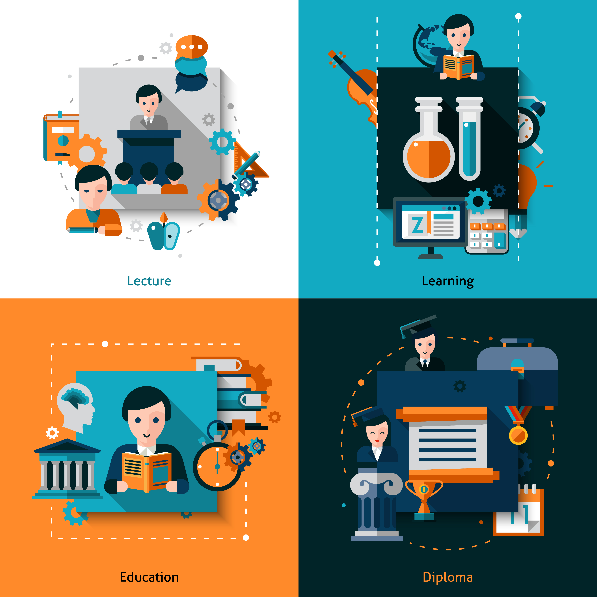
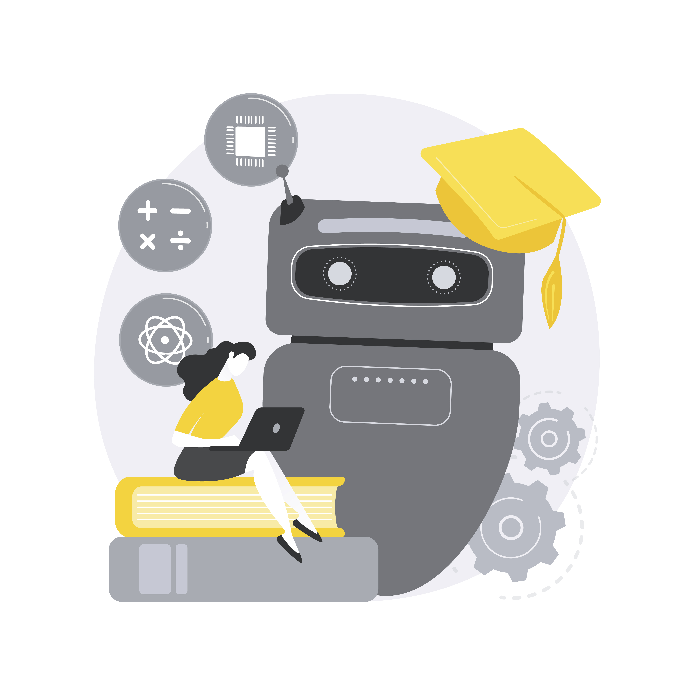
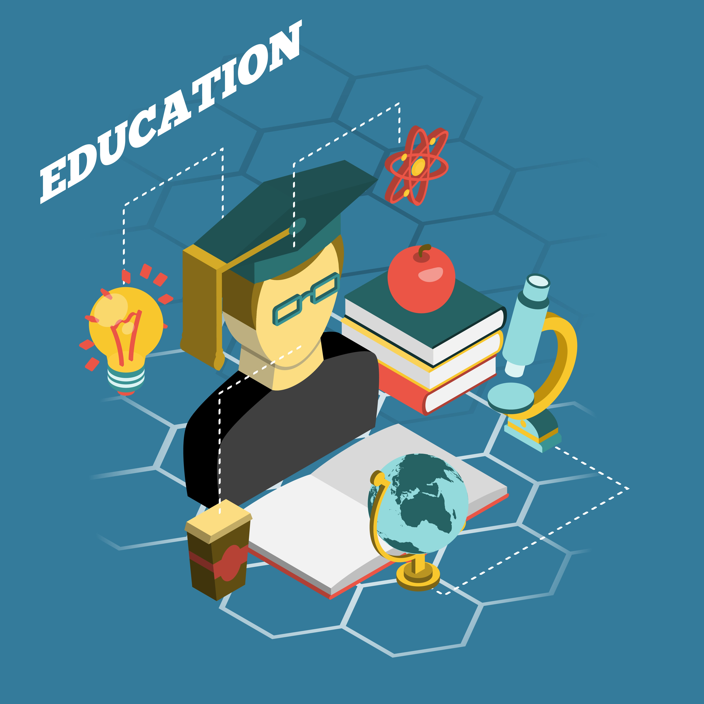
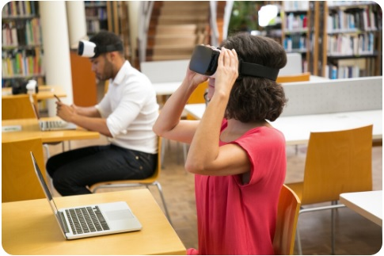
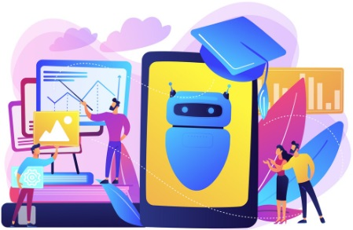
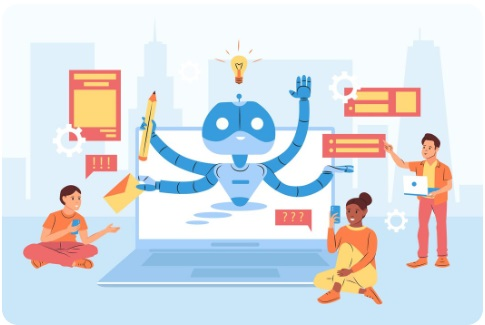
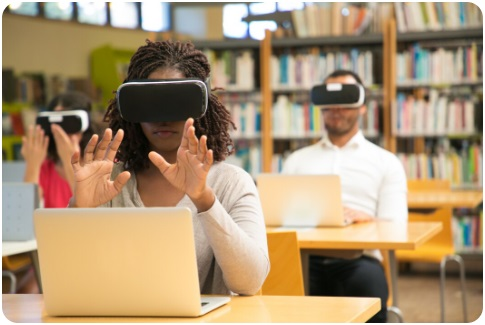
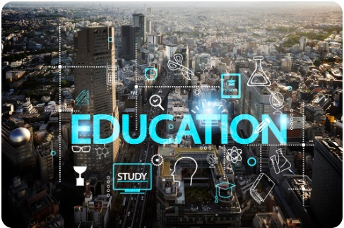

Resumen
La educación superior enfrenta el desafío de integrar tecnologías disruptivas de manera responsable y pedagógicamente significativa. Este artículo reflexiona sobre tres corrientes clave: los sistemas de recomendación basados en inteligencia artificial, la educación disruptiva con enfoque socioformativo y la lectura socio-técnica de la disrupción digital. Se argumenta que estas corrientes no solo transforman las herramientas educativas, sino que redefinen roles, currículos y éticas institucionales.
Se propone un marco operativo de 4C para guiar decisiones pedagógicas en entornos virtuales e híbridos, superando el uso instrumental de las tecnologías y promoviendo una educación digital inclusiva, crítica y centrada en el estudiante.
Introducción

En la última década, la educación superior ha evolucionado desde la simple “incorporación de TIC” hacia la construcción de ecosistemas digitales que personalizan contenidos, trayectorias y evaluaciones. Esta transformación no es meramente técnica: reconfigura tiempos, espacios y expectativas de aprendizaje, exigiendo una mirada socio-técnica que analice cómo las tecnologías y las prácticas sociales se co-construyen.
La disrupción digital en la educación no se limita a la adopción de herramientas, sino que implica repensar el currículo, la evaluación y la ética del cuidado. En este contexto, la inteligencia artificial (IA) emerge como un actor clave, especialmente en sistemas de recomendación que, bien diseñados, pueden alinear recursos educativos con objetivos formativos y perfiles estudiantiles, evitando sesgos y promoviendo la diversidad cognitiva.
Este artículo aborda cómo articular estas corrientes para una educación superior más justa, reflexiva y humanista.
.IA para la recomendación en educación en línea: promesa y condiciones
Los sistemas de recomendación aplicados a recursos educativos mejoran la pertinencia, diversidad y oportunidad de los materiales. Su valor reside en alinear sugerencias con objetivos formativos y perfiles, transparentando criterios para evitar sesgos o “burbujas cognitivas”. La recomendación debe anclarse en el diseño instruccional, priorizando calidad y necesidades sobre popularidad.
Educación Disruptiva Socioformativa: Hacia la Formación Integral y Humanista
Los enfoques de disrupción educativa socioformativa han demostrado resultados significativos en la formación integral de estudiantes, promoviendo:
Ambientes inclusivos y colaborativos.
Competencias transversales (pensamiento crítico, responsabilidad social).
Proyectos vitales conectados con problemas reales.
Un estudio con 2,223 universitarios (Valles et al., 2023) identificó que este modelo predice en un 80% la formación humanista, interpelando a reorganizar el currículo en torno a problemas auténticos y evaluaciones situadas. La tecnología, en este marco, actúa como mediadora de aprendizajes significativos, no como fin en sí misma.
En una universidad rural, estudiantes usaron TAC (Tecnologías del Aprendizaje y el Conocimiento) para diseñar soluciones comunitarias, como sistemas de gestión de residuos, integrando saberes académicos con compromisos éticos.
Disrupción digital: una lectura socio-técnica
La disrupción no es mera moda tecnológica; tecnología y sociedad se transforman mutuamente sin neutralidad. Introducir IA implica reconfiguración institucional, como políticas de datos, roles docentes y alfabetización algorítmica.
La Necesidad de una educación digital
Entender la disrupción como una tendencia tecnológica empobrece el análisis. Una aproximación socio-técnica revela que tecnología y sociedad se transforman mutuamente:
Cada herramienta incorpora visiones sobre conocimiento, autoridad y participación.
Introducir IA en educación implica reconfigurar políticas de datos, roles docentes y alfabetización algorítmica.
La educación digital no es solo migrar contenidos a plataformas, sino construir culturas pedagógicas que garanticen equidad, continuidad y bienestar digital. Esto es especialmente crítico en contextos con brechas de acceso, donde estrategias offline y híbridas pueden ser puentes para la inclusión.
La tecnología no es neutral: refleja y moldea valores sociales (García-Perdomo, 2019).
¿Dónde Encaja la IA Recomendadora en un Proyecto Humanista?
La IA debe ampliar agencia, no sustituirla. En socioformación, apoya rutas y desafíos relevantes, con criterios visibles y metacognición. Integrada a proyectos auténticos, reduce riesgos algorítmicos y fomenta conocimiento integral.
La disrupción digital transforma enseñanza y aprendizaje, requiriendo pasar de usos instrumentales a escenarios significativos. Rincón y Quiñones (2017) enfatizan trascender visiones utilitaristas para culturas digitales colaborativas, convirtiendo docentes en mediadores y estudiantes en productores activos.
En contextos volátiles, como señala García (2019), la educación debe integrar metodologías críticas. La socioformación articula lo tecnológico con lo humanista, desarrollando pensamiento crítico y responsabilidad social mediante proyectos reales (Valles et al., 2023).
Un Marco Operativo de 4C para Programas Universitarios Virtuales e Híbridos
- Contexto: Mapear perfiles, brechas y metas; usar analítica para decisiones pedagógicas.
- Curaduría Algorítmica Responsable: Combinar IA con curaduría docente y anti-sesgos.
- Cuidado Ético: Políticas de datos, alfabetización y bienestar digital.
- Coevaluación Formativa: Integrar pares, autoevaluación y reflexión sobre procesos.
Implicaciones para la Docencia y la Gestión Curricular
- Rediseño de Roles: Docentes como curadores metacognitivos; estudiantes como negociadores de rutas.
- Evaluación Auténtica: Tareas basadas en problemas con IA para andamiaje transparente.
- Gobernanza de Datos: Comité ético para revisar métricas y equidad.
Conclusiones
Sembrando luz en la era digital La educación que queremos es la que construimos juntos. Imagina por un momento un aula sin paredes, donde cada clic no es solo un dato, sino una semilla de posibilidad. Donde un algoritmo no decide por nosotros, sino que nos ayuda a descubrir caminos ocultos, como un faro que ilumina rutas en medio de la niebla. Imagina una educación que no teme a la disrupción, sino que la abraza como una oportunidad para sanar brechas, para tejer redes entre quienes tienen mucho y quienes han tenido poco. Ese futuro no es una utopía: es el horizonte que podemos alcanzar si decidimos, hoy, que la tecnología será un puente y no un muro.
Este artículo ha sido un viaje por tres corrientes que están redefiniendo la educación superior: la inteligencia artificial como aliada, la disrupción socioformativa como brújula y la mirada socio-técnica como lente crítico. Pero más allá de los conceptos, lo que late aquí es una pregunta urgente: ¿Cómo aseguramos que nadie se quede atrás en este mundo digital? La respuesta no está en los códigos ni en las pantallas, sino en nosotros: en los docentes que eligen ser guías en lugar de transmisores, en los estudiantes que exigen aprender para transformar, y en las instituciones que apuestan por una ética del cuidado antes que por la eficiencia deshumanizada.
El marco de las 4C: Contexto, Curaduría, Cuidado y Coevaluación, no es solo una metodología; es un manifiesto. Un recordatorio de que la educación digital no se trata de migrar contenidos a una plataforma, sino de reimaginar cómo aprendemos, cómo nos evaluamos y cómo nos acompañamos. Es una invitación a preguntarnos:
¿Estamos usando la tecnología para reproducir desigualdades o para crear oportunidades?
¿Nuestros algoritmos reflejan la diversidad de quienes aprenden o solo los sesgos de quienes los programan?
¿Cómo hacemos para que la IA no reemplace la mirada humana, sino que la potencie?
En Colombia, donde la geografía a veces aísla, pero la educación puede unir, este debate es especialmente vital. Aquí, donde el campo y la ciudad se encuentran, donde lo analógico y lo digital conviven, la educación disruptiva no es un lujo: es una necesidad. Una necesidad de formar profesionales que no solo sepan usar herramientas, sino que entiendan su impacto; que no solo consuman información, sino que la cuestionen, la creen y la compartan. Porque la verdadera innovación no está en tener la última plataforma, sino en saber para qué la usamos.
Cerramos con un llamado que es también un abrazo: la tecnología avanza, pero el corazón de la educación sigue siendo humano. Que este artículo no sea un punto final, sino un punto de partida. Que nos inspire a:
Escuchar a quienes históricamente han sido silenciados por la brecha digital.
Experimentar con modelos que pongan a las personas antes que a los datos.
Soñar en voz alta, porque los cambios grandes empiezan con conversaciones pequeñas.
La educación que queremos ya está aquí, latente en cada aula virtual, en cada proyecto colaborativo, en cada docente que elige educar para la vida y no solo para el mercado. Como decía Paulo Freire,"la educación no cambia al mundo, cambia a las personas que van a cambiar el mundo". Hoy, más que nunca, ese mundo nos necesita. ¿Empezamos?
"No heredamos la tierra de nuestros ancestros; la tomamos prestada de nuestros hijos" (Proverbio indígena).
.Referencias Bibliográficas
- Sanabria, G.; Regil, L. (2024). Inteligencia artificial para la recomendación de recursos en educación en línea. Enlace
- Valles, H., Parra, H., Fierro, L. A. (2023). La educación disruptiva socio formativa y el uso de la tecnología para la formación integral y humanista de estudiantes universitarios. Enlace
- García-Perdomo, V. (2019). Aproximación técnico-social al entendimiento de la disrupción digital. Enlace
- García Aretio, L. (2019). Necesidad de una educación digital en un mundo digital. RIED. Revista Iberoamericana de Educación a Distancia Enlace
- Mora, A. M. (2022). Disrupción en la educación. [Objeto virtual de Información OVI]. Repositorio Institucional UNAD. Enlace
- Morales, S. (2020). Escritura colaborativa. [Objeto virtual de información OVI]. Repositorio Institucional UNAD. Enlace